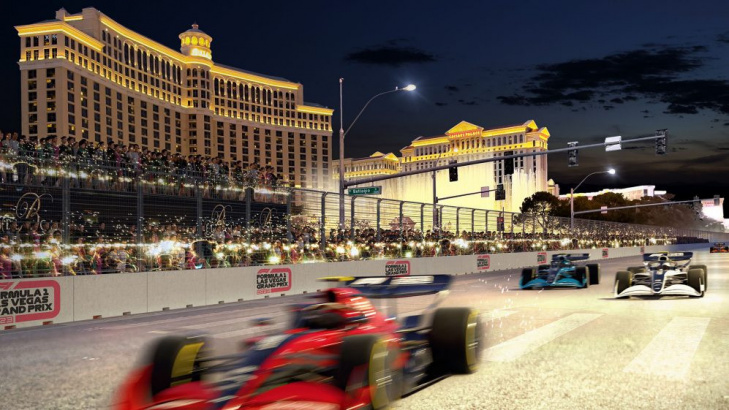

Belmadi, un choix s'impose
Le sélectionneur algérien a laissé entendre qu'il partirait en cas d'élimination. Mais tout n'est pas encore ficelé.
Netflix lance un docu-série sur le prochain Tour de France
La plateforme Netflix s'associe à ASO (Amaury Sport Organisation), avec la participation de France Télévisions, pour la production d'un docu-série sur les coulisses du Tour de France 2022 (1er-24 juillet). Le tournage a déjà débuté.
